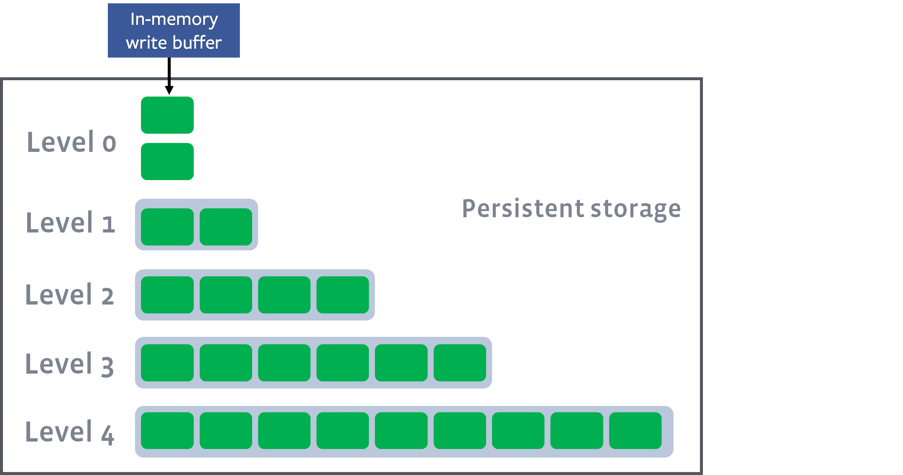

<!DOCTYPE html>
<html><head><title>LSM Tree (RocksDB)</title><meta charSet="utf-8"/><meta name="viewport" content="width=device-width, initial-scale=1.0"/><meta property="og:title" content="LSM Tree (RocksDB)"/><meta property="og:description" content="참고한 것들 RocksDB 공식 문서 - Compaction RocksDB 공식 문서 - Leveled Compaction 그림 출처 별도의 명시가 있지 않는 한, 그림들은 RocksDB 공식문서 에서 가져왔습니다. 내용의 범위 본 글의 내용은 LSM Tree 의 RocksDB 구현체를 기준으로 설명합니다."/><meta property="og:image" content="https://mdg.haeramk.im/static/og-image.png"/><meta property="og:width" content="1200"/><meta property="og:height" content="675"/><link rel="icon" href="../../../../../static/icon.png"/><meta name="description" content="참고한 것들 RocksDB 공식 문서 - Compaction RocksDB 공식 문서 - Leveled Compaction 그림 출처 별도의 명시가 있지 않는 한, 그림들은 RocksDB 공식문서 에서 가져왔습니다. 내용의 범위 본 글의 내용은 LSM Tree 의 RocksDB 구현체를 기준으로 설명합니다."/><meta name="generator" content="Quartz"/><link rel="preconnect" href="https://fonts.googleapis.com"/><link rel="preconnect" href="https://fonts.gstatic.com"/><link href="../../../../../index.css" rel="stylesheet" type="text/css" spa-preserve/><link href="https://cdn.jsdelivr.net/npm/katex@0.16.0/dist/katex.min.css" rel="stylesheet" type="text/css" spa-preserve/><link href="https://fonts.googleapis.com/css2?family=IBM Plex Mono&amp;family=Gowun Batang:wght@400;700&amp;family=Gowun Dodum:ital,wght@0,400;0,600;1,400;1,600&amp;display=swap" rel="stylesheet" type="text/css" spa-preserve/><script src="../../../../../prescript.js" type="application/javascript" spa-preserve></script><script type="application/javascript" spa-preserve>const fetchData = fetch(`../../../../../static/contentIndex.json`).then(data => data.json())</script></head><body data-slug="gardens/database/dbms/rocksdb/terms/LSM-Tree-(RocksDB)"><div id="quartz-root" class="page"><div id="quartz-body"><div class="left sidebar"><h1 class="page-title "><a href="../../../../..">Madison Digital Garden</a></h1><div class="spacer mobile-only"></div><div class="search "><div id="search-icon"><p>Search</p><div></div><svg tabIndex="0" aria-labelledby="title desc" role="img" xmlns="http://www.w3.org/2000/svg" viewBox="0 0 19.9 19.7"><title id="title">Search</title><desc id="desc">Search</desc><g class="search-path" fill="none"><path stroke-linecap="square" d="M18.5 18.3l-5.4-5.4"></path><circle cx="8" cy="8" r="7"></circle></g></svg></div><div id="search-container"><div id="search-space"><input autocomplete="off" id="search-bar" name="search" type="text" aria-label="Search for something" placeholder="Search for something"/><div id="results-container"></div></div></div></div><div class="darkmode "><input class="toggle" id="darkmode-toggle" type="checkbox" tabIndex="-1"/><label id="toggle-label-light" for="darkmode-toggle" tabIndex="-1"><svg xmlns="http://www.w3.org/2000/svg" xmlnsXlink="http://www.w3.org/1999/xlink" version="1.1" id="dayIcon" x="0px" y="0px" viewBox="0 0 35 35" style="enable-background:new 0 0 35 35;" xmlSpace="preserve"><title>Light mode</title><path d="M6,17.5C6,16.672,5.328,16,4.5,16h-3C0.672,16,0,16.672,0,17.5    S0.672,19,1.5,19h3C5.328,19,6,18.328,6,17.5z M7.5,26c-0.414,0-0.789,0.168-1.061,0.439l-2,2C4.168,28.711,4,29.086,4,29.5    C4,30.328,4.671,31,5.5,31c0.414,0,0.789-0.168,1.06-0.44l2-2C8.832,28.289,9,27.914,9,27.5C9,26.672,8.329,26,7.5,26z M17.5,6    C18.329,6,19,5.328,19,4.5v-3C19,0.672,18.329,0,17.5,0S16,0.672,16,1.5v3C16,5.328,16.671,6,17.5,6z M27.5,9    c0.414,0,0.789-0.168,1.06-0.439l2-2C30.832,6.289,31,5.914,31,5.5C31,4.672,30.329,4,29.5,4c-0.414,0-0.789,0.168-1.061,0.44    l-2,2C26.168,6.711,26,7.086,26,7.5C26,8.328,26.671,9,27.5,9z M6.439,8.561C6.711,8.832,7.086,9,7.5,9C8.328,9,9,8.328,9,7.5    c0-0.414-0.168-0.789-0.439-1.061l-2-2C6.289,4.168,5.914,4,5.5,4C4.672,4,4,4.672,4,5.5c0,0.414,0.168,0.789,0.439,1.06    L6.439,8.561z M33.5,16h-3c-0.828,0-1.5,0.672-1.5,1.5s0.672,1.5,1.5,1.5h3c0.828,0,1.5-0.672,1.5-1.5S34.328,16,33.5,16z     M28.561,26.439C28.289,26.168,27.914,26,27.5,26c-0.828,0-1.5,0.672-1.5,1.5c0,0.414,0.168,0.789,0.439,1.06l2,2    C28.711,30.832,29.086,31,29.5,31c0.828,0,1.5-0.672,1.5-1.5c0-0.414-0.168-0.789-0.439-1.061L28.561,26.439z M17.5,29    c-0.829,0-1.5,0.672-1.5,1.5v3c0,0.828,0.671,1.5,1.5,1.5s1.5-0.672,1.5-1.5v-3C19,29.672,18.329,29,17.5,29z M17.5,7    C11.71,7,7,11.71,7,17.5S11.71,28,17.5,28S28,23.29,28,17.5S23.29,7,17.5,7z M17.5,25c-4.136,0-7.5-3.364-7.5-7.5    c0-4.136,3.364-7.5,7.5-7.5c4.136,0,7.5,3.364,7.5,7.5C25,21.636,21.636,25,17.5,25z"></path></svg></label><label id="toggle-label-dark" for="darkmode-toggle" tabIndex="-1"><svg xmlns="http://www.w3.org/2000/svg" xmlnsXlink="http://www.w3.org/1999/xlink" version="1.1" id="nightIcon" x="0px" y="0px" viewBox="0 0 100 100" style="enable-background='new 0 0 100 100'" xmlSpace="preserve"><title>Dark mode</title><path d="M96.76,66.458c-0.853-0.852-2.15-1.064-3.23-0.534c-6.063,2.991-12.858,4.571-19.655,4.571  C62.022,70.495,50.88,65.88,42.5,57.5C29.043,44.043,25.658,23.536,34.076,6.47c0.532-1.08,0.318-2.379-0.534-3.23  c-0.851-0.852-2.15-1.064-3.23-0.534c-4.918,2.427-9.375,5.619-13.246,9.491c-9.447,9.447-14.65,22.008-14.65,35.369  c0,13.36,5.203,25.921,14.65,35.368s22.008,14.65,35.368,14.65c13.361,0,25.921-5.203,35.369-14.65  c3.872-3.871,7.064-8.328,9.491-13.246C97.826,68.608,97.611,67.309,96.76,66.458z"></path></svg></label></div></div><div class="center"><div class="page-header"><div class="popover-hint"><h1 class="article-title ">LSM Tree (RocksDB)</h1><p class="content-meta ">Apr 14, 2024, 10 min read</p><ul class="tags "><li><a href="../../../../../tags/terms" class="internal tag-link">#terms</a></li><li><a href="../../../../../tags/database" class="internal tag-link">#database</a></li><li><a href="../../../../../tags/rocksdb" class="internal tag-link">#rocksdb</a></li></ul></div></div><article class="popover-hint"><blockquote class="callout is-collapsible is-collapsed" data-callout="info" data-callout-fold>
<div class="callout-title">
                  <div class="callout-icon"><svg xmlns="http://www.w3.org/2000/svg" width="100%" height="100%" viewBox="0 0 24 24" fill="none" stroke="currentColor" stroke-width="2" stroke-linecap="round" stroke-linejoin="round"><circle cx="12" cy="12" r="10"></circle><line x1="12" y1="16" x2="12" y2="12"></line><line x1="12" y1="8" x2="12.01" y2="8"></line></svg></div>
                  <div class="callout-title-inner"><p>참고한 것들 </p></div>
                  <svg xmlns="http://www.w3.org/2000/svg" width="24" height="24" viewBox="0 0 24 24" fill="none" stroke="currentColor" stroke-width="2" stroke-linecap="round" stroke-linejoin="round" class="fold">
                  <polyline points="6 9 12 15 18 9"></polyline>
                </svg>
                </div>
<ul>
<li><a href="https://github.com/facebook/rocksdb/wiki/Compaction" class="external">RocksDB 공식 문서 - Compaction</a></li>
<li><a href="https://github.com/facebook/rocksdb/wiki/Leveled-Compaction" class="external">RocksDB 공식 문서 - Leveled Compaction</a></li>
</ul>
</blockquote>
<blockquote class="callout" data-callout="info">
<div class="callout-title">
                  <div class="callout-icon"><svg xmlns="http://www.w3.org/2000/svg" width="100%" height="100%" viewBox="0 0 24 24" fill="none" stroke="currentColor" stroke-width="2" stroke-linecap="round" stroke-linejoin="round"><circle cx="12" cy="12" r="10"></circle><line x1="12" y1="16" x2="12" y2="12"></line><line x1="12" y1="8" x2="12.01" y2="8"></line></svg></div>
                  <div class="callout-title-inner"><p>그림 출처 </p></div>
                  
                </div>
<ul>
<li>별도의 명시가 있지 않는 한, 그림들은 <a href="https://github.com/facebook/rocksdb/wiki/Leveled-Compaction" class="external">RocksDB 공식문서</a> 에서 가져왔습니다.</li>
</ul>
</blockquote>
<blockquote class="callout" data-callout="warning">
<div class="callout-title">
                  <div class="callout-icon"><svg xmlns="http://www.w3.org/2000/svg" width="100%" height="100%" viewBox="0 0 24 24" fill="none" stroke="currentColor" stroke-width="2" stroke-linecap="round" stroke-linejoin="round"><path d="m21.73 18-8-14a2 2 0 0 0-3.48 0l-8 14A2 2 0 0 0 4 21h16a2 2 0 0 0 1.73-3Z"></path><line x1="12" y1="9" x2="12" y2="13"></line><line x1="12" y1="17" x2="12.01" y2="17"></line></svg></div>
                  <div class="callout-title-inner"><p>내용의 범위 </p></div>
                  
                </div>
<ul>
<li>본 글의 내용은 <a href="../../../../../gardens/algorithm/draft/Log-Structure-Merge-Tree,-LSM-Tree-(Data-Structure)" class="internal" data-slug="gardens/algorithm/draft/Log-Structure-Merge-Tree,-LSM-Tree-(Data-Structure)">LSM Tree</a> 의 RocksDB 구현체를 기준으로 설명합니다. Patrick O’Neil 의 논문 및 LSM 의 이론적인 내용은 여기 담겨있지 않습니다.</li>
</ul>
</blockquote>
<h2 id="기본-아이디어">기본 아이디어<a aria-hidden="true" tabindex="-1" href="#기본-아이디어" class="internal"> §</a></h2>
<ul>
<li>LSM 의 기본 아이디어는 다음과 같다:</li>
</ul>
<ol>
<li><em>Log-structured (sequential write)</em> 를 통해 write 성능을 개선한다.
<ul>
<li>일반적으로 sequential write 는 write 성능을 개선하는 것으로 알려져 있다. (<a href="../../../../../gardens/os/fs/papers/(논문)-The-design-and-implementation-of-a-log-structured-file-system" class="internal" data-slug="gardens/os/fs/papers/(논문)-The-design-and-implementation-of-a-log-structured-file-system">참고 사례 - LFS</a>)</li>
</ul>
</li>
<li><em>Sorting + Level</em> 을 통해 read 를 최적화 한다.
<ul>
<li>Sorting 되어 있으면 binary search 를 통해 key 에 대한 value 를 빨리 찾을 수 있기 때문.</li>
</ul>
</li>
<li><em>Compaction</em> 을 통해 log-structured 에서 발생하는 데이터 중복 문제를 해소한다.</li>
</ol>
<h3 id="log-structured-sequential-write">Log-structured, Sequential Write<a aria-hidden="true" tabindex="-1" href="#log-structured-sequential-write" class="internal"> §</a></h3>
<ul>
<li>위에서 말한 것 처럼, 모든 key-value pair 는 sequential write 된다.
<ul>
<li>Update 는 in-place update 가 아닌, 새로운 pair (기존의 key + 새로운 value) 를 sequential write 하면 된다.</li>
<li>Delete 또한 in-place delete 가 아닌, 데이터가 지워졌음을 알리는 특별한 pair (기존의 key + 특별한 value) 를 sequential write 하면 된다.
<ul>
<li>이때의 특별한 value 를 <em>Tombstone (묘비)</em> 라고 부른다.</li>
</ul>
</li>
</ul>
</li>
</ul>
<h3 id="sorting-and-leveled-architecture">Sorting and Leveled Architecture<a aria-hidden="true" tabindex="-1" href="#sorting-and-leveled-architecture" class="internal"> §</a></h3>
<ul>
<li>그럼 이때 read (retrieval; key 에 대한 value 를 읽어오는 것) 은 어떻게 하면 좋을까.
<ul>
<li>우선 가장 간단하게는 Linear Search 를 시도해 볼 수 있다.
<ul>
<li>즉, pair 가 sequential write 되어 있기 때문에, 반대 방향으로 linear search 를 하며 key 에 대한 가장 최신의 value 를 읽어오면 되지 않을까.</li>
<li>하지만 이 방법은 너무 느리다. <span class="math math-inline"><span class="katex"><span class="katex-html" aria-hidden="true"><span class="base"><span class="strut" style="height:1em;vertical-align:-0.25em;"></span><span class="mord mathnormal" style="margin-right:0.02778em;">O</span><span class="mopen">(</span><span class="mord mathnormal" style="margin-right:0.10903em;">N</span><span class="mclose">)</span></span></span></span></span> 이기 때문.</li>
</ul>
</li>
<li>아니면 hash map 을 사용하는 방법도 있다.
<ul>
<li>Key 에 대한 가장 최신의 value 주소를 메모리상에 hash map 으로 관리하면 이런 search 과정 없이 바로 디스크에서 value 를 읽어올 수 있을 것이다.</li>
<li>하지만 이 방법은 key 가 많아질 경우 메모리 공간을 너무 많이 잡아먹는다는 단점이 있다.</li>
</ul>
</li>
<li>결국에는 시간과 공간 간의 trade-off 가 있는 셈이다.</li>
</ul>
</li>
<li>이것을 LSM 에서는 Sorting 과 Level 로 해소한다.
<ul>
<li>Sorting 을 하면 binary search 로 pair 를 찾을 수 있기 때문에 linear search 보다는 빠르고, hash map 을 사용하는 것보다는 메모리를 절약할 수 있기 때문.</li>
<li>다만 sorting 을 한다는 것은 sequential 하지 않다는 것을 의미한다.</li>
<li>이를 위해 LSM 에서는 level 이라는 단위로 sorting 을 하고, 각 level 을 sequential write 하여 sorting 과 sequential 를 조화시킨다.</li>
</ul>
</li>
</ul>
<blockquote class="callout" data-callout="tip">
<div class="callout-title">
                  <div class="callout-icon"><svg xmlns="http://www.w3.org/2000/svg" width="100%" height="100%" viewBox="0 0 24 24" fill="none" stroke="currentColor" stroke-width="2" stroke-linecap="round" stroke-linejoin="round"><path d="M8.5 14.5A2.5 2.5 0 0 0 11 12c0-1.38-.5-2-1-3-1.072-2.143-.224-4.054 2-6 .5 2.5 2 4.9 4 6.5 2 1.6 3 3.5 3 5.5a7 7 0 1 1-14 0c0-1.153.433-2.294 1-3a2.5 2.5 0 0 0 2.5 2.5z"></path></svg></div>
                  <div class="callout-title-inner"><p>Level 과 Sequential write </p></div>
                  
                </div>
<ul>
<li>지금은 이해를 위해 Level 단위로 Sequential write 가 된다고 설명했지만, 실제 작동 방식은 조금 더 복잡하고, 명확하게 말하자면 level 단위의 sequential write 는 틀린 얘기이다.</li>
<li>더 구체적인 얘기는 아래에서 하도록 하고 지금은 최신의 key-value pair 는 상위 level 에, 오래된 pair 는 하위 pair 에 위치한다는 것만 알고 넘어가자.</li>
</ul>
</blockquote>
<ul>
<li>이 방식에서 read 는 다음처럼 수행할 수 있을 것이다.
<ul>
<li>최신의 pair 는 상위 level 에 있기 때문에 상위 level 에서부터 binary search 를 수행해 pair 가 있는 지 찾고, 없다면 다음 level 로 넘어가며 read 를 하면 되지 않을까.</li>
<li>아니면 다음 level 로 넘어가며 level 간 linear search 를 하는 대신에, <a href="../../../../../gardens/algorithm/draft/Sparse-Index-(Data-Structure)" class="internal" data-slug="gardens/algorithm/draft/Sparse-Index-(Data-Structure)">sparse index</a> 등을 이용하여 더욱 최적화 할 수도 있을 것이다.</li>
</ul>
</li>
</ul>
<h3 id="compaction-process">Compaction Process<a aria-hidden="true" tabindex="-1" href="#compaction-process" class="internal"> §</a></h3>
<ul>
<li>근데 이렇게 sequential write 하다 보면 분명히 용량이 부족해지는 나날이 온다.</li>
<li>이 상황에서 지울만한 데이터를 생각해 보면, 하나밖에 떠오르지 않을 것이다: 최근에 update 되어서 outdated 된 옛날의 key-value pair.</li>
<li>따라서 주기적으로, 혹은 적당한 조건이 충족되었을 때 <em>Compaction</em> 을 수행하며 최근의 pair 만 남기고 이전의 중복된 pair 들은 싹 정리해 주는 과정을 거친다.</li>
</ul>
<h2 id="실제-구조">실제 구조<a aria-hidden="true" tabindex="-1" href="#실제-구조" class="internal"> §</a></h2>
<ul>
<li>자 그럼 위의 아이디어들이 실제로는 어떻게 되어 있는지 확인해 보자.</li>
</ul>
<h3 id="level-based-file-structure">Level-based File Structure<a aria-hidden="true" tabindex="-1" href="#level-based-file-structure" class="internal"> §</a></h3>
<p></p>
<ul>
<li>위에서 말한 Level 은 실제로 위와 같은 모습을 띄고 있다.
<ul>
<li>헷갈리지 말자: Level 은 번호가 작을수록 상위 Level 이다.</li>
</ul>
</li>
<li>이 구조를 Top-down 으로 살펴보자.</li>
</ul>
<h4 id="최상단-memtable">최상단: Memtable<a aria-hidden="true" tabindex="-1" href="#최상단-memtable" class="internal"> §</a></h4>
<ul>
<li>우선 제일 위에는 ==<em><a href="../../../../../gardens/database/dbms/rocksdb/terms/Memtable-(RocksDB)" class="internal" data-slug="gardens/database/dbms/rocksdb/terms/Memtable-(RocksDB)">Memtable</a></em> 이라는 인메모리 write buffer== 가 있다.
<ul>
<li>즉 어떤 key-value pair 가 write 되면, 일단 제일 먼저 이곳에 저장되고, 추후에 디스크로 flush 되는 것.</li>
</ul>
</li>
<li>이 memtable 은 RocksDB 에서는 기본적으로 <a href="../../../../../gardens/algorithm/draft/Skip-List-(Data-Structure)" class="internal" data-slug="gardens/algorithm/draft/Skip-List-(Data-Structure)">skiplist</a> 로 구현되고, append-only 로 작동한다.
<ul>
<li>왜 굳이 메모리에 있는데 append-only 일까? 라는 생각이 든다면 <a href="../../../../../gardens/database/dbms/rocksdb/terms/Memtable-(RocksDB)" class="internal" data-slug="gardens/database/dbms/rocksdb/terms/Memtable-(RocksDB)">Memtable</a> 문서에서 더 자세한 내용을 확인하자.</li>
</ul>
</li>
</ul>
<h4 id="static-sorted-table-sst">Static Sorted Table (SST)<a aria-hidden="true" tabindex="-1" href="#static-sorted-table-sst" class="internal"> §</a></h4>
<ul>
<li>Memtable 에 있던 key-value 쌍들은 디스크에 flush 될 때, SST 라는 파일로 저장된다.</li>
<li>==<em><a href="../../../../../gardens/database/dbms/rocksdb/terms/Static-Sorted-Table,-SST-(RocksDB)" class="internal" data-slug="gardens/database/dbms/rocksdb/terms/Static-Sorted-Table,-SST-(RocksDB)">Static Sorted Table (SST)</a></em> 는 key 를 기준으로 중복 없이 정렬되어 있고, 수정이 불가능한 key-value pair 들의 모음 파일==이다.</li>
</ul>
<h4 id="level-0-l0">Level 0 (L0)<a aria-hidden="true" tabindex="-1" href="#level-0-l0" class="internal"> §</a></h4>
<ul>
<li>이렇게 ==Memtable 에 있던 내용이 SST 가 되어 처음으로 디스크에 저장되는 장소가 <em>Level0 (L0)</em>== 이다.</li>
<li>이 level 은 다른 level 들과는 다른 특별한 공간이다.
<ul>
<li>아래에서 설명할 <a href="#level-size-limit" class="internal">Level Size Limit</a> 이나 <a href="#sorted-run" class="internal">Sorted Run</a> 은 level 에 적용되지 않는다.</li>
<li>즉, Memtable 에서 L0 로 내려올 때는 그냥 SST 로 변환되어 내려오기만 하고, SST 간의 key 중복 혹은 key 범위 겹침 등은 얼마든지 가능하다.</li>
</ul>
</li>
<li>여기에 있던 SST 들의 개수가 <code>level0_file_num_compaction_trigger</code> 에 도달하면 모든 SST 가 <a href="#compaction" class="internal">Compaction</a> 을 통해 다음 level 로 내려간다.</li>
</ul>
<h4 id="level-1--max-l1--lmax">Level 1 ~ MAX (L1 ~ LMAX)<a aria-hidden="true" tabindex="-1" href="#level-1--max-l1--lmax" class="internal"> §</a></h4>
<ul>
<li>이 레벨들은 크기는 다르지만, 공통된 특징을 지닌다. 하나씩 살펴보자.</li>
</ul>
<h5 id="level-size-limit">Level Size Limit<a aria-hidden="true" tabindex="-1" href="#level-size-limit" class="internal"> §</a></h5>
<p></p>
<ul>
<li>각 <em>Level</em> 은 정해진 size limit 이 있고, 하위 level 로 내려갈수록 이 limit 은 커진다.
<ul>
<li>기본적으로 Exponential 하게 증가한다고 생각하면 된다.</li>
</ul>
</li>
<li>그리고 만약 이 size limit 을 넘게 되면, <a href="#compaction" class="internal">Compaction</a> 이 진행되어 넘친 데이터를 아래로 내려보내게 된다.</li>
</ul>
<h5 id="sorted-run">Sorted Run<a aria-hidden="true" tabindex="-1" href="#sorted-run" class="internal"> §</a></h5>
<p></p>
<ul>
<li>각 level 은 <a href="../../../../../gardens/algorithm/data-structure/linear/Sorted-Run-(Data-Structure)" class="internal" data-slug="gardens/algorithm/data-structure/linear/Sorted-Run-(Data-Structure)">Sorted Run</a> 이다.
<ul>
<li>즉, level 을 구성하는 SST 들 간에는 중복된 key 가 존재하지 않고, key 의 범위도 겹치지 않는다.</li>
</ul>
</li>
<li>이렇게 함으로써 level 내에서는 binary search 로 원하는 key-value pair 를 빠르게 잡아낼 수 있다.
<ul>
<li>일단 각 SST 의 시작 혹은 끝 key 들을 모아 binary search 를 하여 원하는 key 가 어느 SST 에 있는지 찾고,</li>
<li>해당 SST 내에서 또 binary search 하여 요놈잡았다 를 하는 것.</li>
</ul>
</li>
<li>그런데 어떻게 이것이 가능할까? 상위 level 에서 SST 가 내려오면 분명히 내려온 SST 와 원래 있던 SST 간에는 중복된 key 들도 있을 것이고, 범위도 겹칠텐데, 어떻게 이런 sorted run 상태를 유지할 수 있을까?
<ul>
<li>정답은 <a href="#compaction" class="internal">Compaction</a> 에 있다.</li>
</ul>
</li>
</ul>
<h2 id="rw-operation">R/W Operation<a aria-hidden="true" tabindex="-1" href="#rw-operation" class="internal"> §</a></h2>
<ul>
<li>위에서도 중간중간 설명하긴 했지만, 이 구조에서 어떻게 R/W 를 수행하는지 총정리를 해보자.</li>
</ul>
<blockquote class="callout is-collapsible is-collapsed" data-callout="failure" data-callout-fold>
<div class="callout-title">
                  <div class="callout-icon"><svg xmlns="http://www.w3.org/2000/svg" width="100%" height="100%" viewBox="0 0 24 24" fill="none" stroke="currentColor" stroke-width="2" stroke-linecap="round" stroke-linejoin="round"><line x1="18" y1="6" x2="6" y2="18"></line><line x1="6" y1="6" x2="18" y2="18"></line></svg></div>
                  <div class="callout-title-inner"><p>#draft 추후에 작성할 예정입니다. </p></div>
                  <svg xmlns="http://www.w3.org/2000/svg" width="24" height="24" viewBox="0 0 24 24" fill="none" stroke="currentColor" stroke-width="2" stroke-linecap="round" stroke-linejoin="round" class="fold">
                  <polyline points="6 9 12 15 18 9"></polyline>
                </svg>
                </div>
<ul class="contains-task-list">
<li class="task-list-item"><input type="checkbox" checked disabled/> 내용 정리</li>
<li class="task-list-item"><input type="checkbox" disabled/> R/W 과정 정리</li>
</ul>
</blockquote></article></div><div class="right sidebar"><div class="graph "><h3>Graph View</h3><div class="graph-outer"><div id="graph-container" data-cfg="{&quot;drag&quot;:true,&quot;zoom&quot;:true,&quot;depth&quot;:1,&quot;scale&quot;:1.1,&quot;repelForce&quot;:0.5,&quot;centerForce&quot;:0.3,&quot;linkDistance&quot;:30,&quot;fontSize&quot;:0.6,&quot;opacityScale&quot;:1,&quot;showTags&quot;:true,&quot;removeTags&quot;:[]}"></div><svg version="1.1" id="global-graph-icon" xmlns="http://www.w3.org/2000/svg" xmlnsXlink="http://www.w3.org/1999/xlink" x="0px" y="0px" viewBox="0 0 55 55" fill="currentColor" xmlSpace="preserve"><path d="M49,0c-3.309,0-6,2.691-6,6c0,1.035,0.263,2.009,0.726,2.86l-9.829,9.829C32.542,17.634,30.846,17,29,17
	s-3.542,0.634-4.898,1.688l-7.669-7.669C16.785,10.424,17,9.74,17,9c0-2.206-1.794-4-4-4S9,6.794,9,9s1.794,4,4,4
	c0.74,0,1.424-0.215,2.019-0.567l7.669,7.669C21.634,21.458,21,23.154,21,25s0.634,3.542,1.688,4.897L10.024,42.562
	C8.958,41.595,7.549,41,6,41c-3.309,0-6,2.691-6,6s2.691,6,6,6s6-2.691,6-6c0-1.035-0.263-2.009-0.726-2.86l12.829-12.829
	c1.106,0.86,2.44,1.436,3.898,1.619v10.16c-2.833,0.478-5,2.942-5,5.91c0,3.309,2.691,6,6,6s6-2.691,6-6c0-2.967-2.167-5.431-5-5.91
	v-10.16c1.458-0.183,2.792-0.759,3.898-1.619l7.669,7.669C41.215,39.576,41,40.26,41,41c0,2.206,1.794,4,4,4s4-1.794,4-4
	s-1.794-4-4-4c-0.74,0-1.424,0.215-2.019,0.567l-7.669-7.669C36.366,28.542,37,26.846,37,25s-0.634-3.542-1.688-4.897l9.665-9.665
	C46.042,11.405,47.451,12,49,12c3.309,0,6-2.691,6-6S52.309,0,49,0z M11,9c0-1.103,0.897-2,2-2s2,0.897,2,2s-0.897,2-2,2
	S11,10.103,11,9z M6,51c-2.206,0-4-1.794-4-4s1.794-4,4-4s4,1.794,4,4S8.206,51,6,51z M33,49c0,2.206-1.794,4-4,4s-4-1.794-4-4
	s1.794-4,4-4S33,46.794,33,49z M29,31c-3.309,0-6-2.691-6-6s2.691-6,6-6s6,2.691,6,6S32.309,31,29,31z M47,41c0,1.103-0.897,2-2,2
	s-2-0.897-2-2s0.897-2,2-2S47,39.897,47,41z M49,10c-2.206,0-4-1.794-4-4s1.794-4,4-4s4,1.794,4,4S51.206,10,49,10z"></path></svg></div><div id="global-graph-outer"><div id="global-graph-container" data-cfg="{&quot;drag&quot;:true,&quot;zoom&quot;:true,&quot;depth&quot;:-1,&quot;scale&quot;:0.9,&quot;repelForce&quot;:0.5,&quot;centerForce&quot;:0.3,&quot;linkDistance&quot;:30,&quot;fontSize&quot;:0.6,&quot;opacityScale&quot;:1,&quot;showTags&quot;:true,&quot;removeTags&quot;:[]}"></div></div></div><div class="toc desktop-only"><button type="button" id="toc"><h3>Table of Contents</h3><svg xmlns="http://www.w3.org/2000/svg" width="24" height="24" viewBox="0 0 24 24" fill="none" stroke="currentColor" stroke-width="2" stroke-linecap="round" stroke-linejoin="round" class="fold"><polyline points="6 9 12 15 18 9"></polyline></svg></button><div id="toc-content"><ul class="overflow"><li class="depth-0"><a href="#기본-아이디어" data-for="기본-아이디어">기본 아이디어</a></li><li class="depth-1"><a href="#log-structured-sequential-write" data-for="log-structured-sequential-write">Log-structured, Sequential Write</a></li><li class="depth-1"><a href="#sorting-and-leveled-architecture" data-for="sorting-and-leveled-architecture">Sorting and Leveled Architecture</a></li><li class="depth-1"><a href="#compaction-process" data-for="compaction-process">Compaction Process</a></li><li class="depth-0"><a href="#실제-구조" data-for="실제-구조">실제 구조</a></li><li class="depth-1"><a href="#level-based-file-structure" data-for="level-based-file-structure">Level-based File Structure</a></li><li class="depth-0"><a href="#rw-operation" data-for="rw-operation">R/W Operation</a></li></ul></div></div><div class="backlinks "><h3>Backlinks</h3><ul class="overflow"><li><a href="../../../../../gardens/database/(Garden)-Database" class="internal">(Garden) Database</a></li><li><a href="../../../../../gardens/database/dbms/rocksdb/terms/Leveled-Compaction-(RocksDB)" class="internal">Leveled Compaction (RocksDB)</a></li><li><a href="../../../../../gardens/database/dbms/rocksdb/terms/Memtable-(RocksDB)" class="internal">Memtable (RocksDB)</a></li><li><a href="../../../../../gardens/database/transaction/drafts/SWMR-MVCC-를-구현하며-겪은-사건사고들" class="internal">SWMR MVCC 를 구현하며 겪은 사건사고들</a></li><li><a href="../../../../../gardens/os/distributed/papers/skyros.2021.sosp.sigops.org/full/1.-Introduction-(Skyros,-SOSP-21)" class="internal">(논문) Exploiting Nil-Externality for Fast Replicated Storage, SOSP 2021 (1. Introduction)</a></li><li><a href="../../../../../gardens/os/distributed/papers/skyros.2021.sosp.sigops.org/full/2.-Nil-Externalizing-Interfaces-(Skyros,-SOSP-21)" class="internal">(논문) Exploiting Nil-Externality for Fast Replicated Storage, SOSP 2021 (2. Nil-Externalizing Interfaces)</a></li><li><a href="../../../../../gardens/os/distributed/papers/skyros.2021.sosp.sigops.org/full/3.-Nilext-aware-Replication-(Skyros,-SOSP-21)" class="internal">(논문) Exploiting Nil-Externality for Fast Replicated Storage, SOSP 2021 (3. Nilext-aware Replication)</a></li><li><a href="../../../../../gardens/storage/zsm/papers/drafts/(논문)-ZNS,-Avoiding-the-Block-Interface-Tax-for-Flash-based-SSDs" class="internal">(논문) ZNS, Avoiding the Block Interface Tax for Flash-based SSDs</a></li></ul></div></div></div><footer class><hr/><p>Created with <a href="https://quartz.jzhao.xyz/">Quartz v4.1.0</a>, © 2025</p><ul><li><a href="https://github.com/haeramkeem">GitHub</a></li><li><a href="https://www.linkedin.com/in/haeram-kim-277404220">LinkedIn</a></li><li><a href="mailto:haeram.kim1@gmail.com">Email</a></li></ul></footer></div></body><script type="application/javascript">// quartz/components/scripts/quartz/components/scripts/callout.inline.ts
function toggleCallout() {
  const outerBlock = this.parentElement;
  outerBlock.classList.toggle(`is-collapsed`);
  const collapsed = outerBlock.classList.contains(`is-collapsed`);
  const height = collapsed ? this.scrollHeight : outerBlock.scrollHeight;
  outerBlock.style.maxHeight = height + `px`;
  let current = outerBlock;
  let parent = outerBlock.parentElement;
  while (parent) {
    if (!parent.classList.contains(`callout`)) {
      return;
    }
    const collapsed2 = parent.classList.contains(`is-collapsed`);
    const height2 = collapsed2 ? parent.scrollHeight : parent.scrollHeight + current.scrollHeight;
    parent.style.maxHeight = height2 + `px`;
    current = parent;
    parent = parent.parentElement;
  }
}
function setupCallout() {
  const collapsible = document.getElementsByClassName(
    `callout is-collapsible`
  );
  for (const div of collapsible) {
    const title = div.firstElementChild;
    if (title) {
      title.removeEventListener(`click`, toggleCallout);
      title.addEventListener(`click`, toggleCallout);
      const collapsed = div.classList.contains(`is-collapsed`);
      const height = collapsed ? title.scrollHeight : div.scrollHeight;
      div.style.maxHeight = height + `px`;
    }
  }
}
document.addEventListener(`nav`, setupCallout);
window.addEventListener(`resize`, setupCallout);
</script><script type="module">
          import mermaid from 'https://cdn.jsdelivr.net/npm/mermaid/dist/mermaid.esm.min.mjs';
          const darkMode = document.documentElement.getAttribute('saved-theme') === 'dark'
          mermaid.initialize({
            startOnLoad: false,
            securityLevel: 'loose',
            theme: darkMode ? 'dark' : 'default'
          });
          document.addEventListener('nav', async () => {
            await mermaid.run({
              querySelector: '.mermaid'
            })
          });
          </script><script src="https://cdn.jsdelivr.net/npm/katex@0.16.7/dist/contrib/copy-tex.min.js" type="application/javascript"></script><script src="https://www.googletagmanager.com/gtag/js?id=G-N68CCP1QHG" type="application/javascript"></script><script src="../../../../../postscript.js" type="module"></script></html>